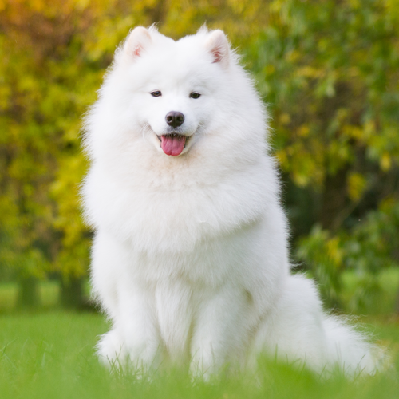

| Samoyed | ||
|---|---|---|
| Menu | Samoyed is a breed of medium-sized herding dogs with thick, white, double-layer coats. They are a spitz-type dog which takes its name from the Samoyedic peoples of Siberia. Descending from the Nenets Herding Laika, they are a domesticated animal that assists in herding, hunting, protection and sled-pulling. |  |
| Ariya Watchara-apanukorn 642110332 | ||